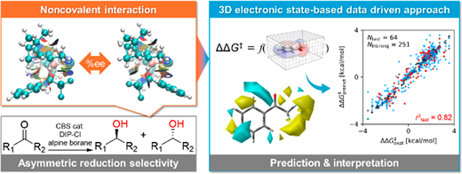
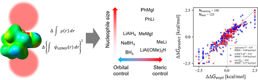

Book Chapter · 2026
反応選択性を支配する三次元電子場解析
反応選択性と三次元電子場解析について解説した分担執筆章です。
Personal Academic Website
横浜国立大学 理工学府 化学・生命系理工学専攻、 物理有機化学・分子設計研究室（五東研究室）に所属しています。 立体電子状態インフォマティクスを用いた反応選択性の起源の解明に取り組んでいます。
About
横浜国立大学 理工学府 化学・生命系理工学専攻、 物理有機化学・分子設計研究室（五東研究室）で、 化学反応の選択性を立体電子状態とデータ駆動型解析から理解する研究を進めています。
About pageNews
Publications
Book Chapter · 2026
反応選択性と三次元電子場解析について解説した分担執筆章です。
Preprint · 2026
速度論に基づいてケトン還元の位置選択性と面選択性を予測する研究です。

2025
ケトンの不斉還元を三次元電子状態から解析した研究です。

2024
環状ケトンの求核付加反応における面選択性を、三次元情報と機械学習で予測・解釈した研究です。